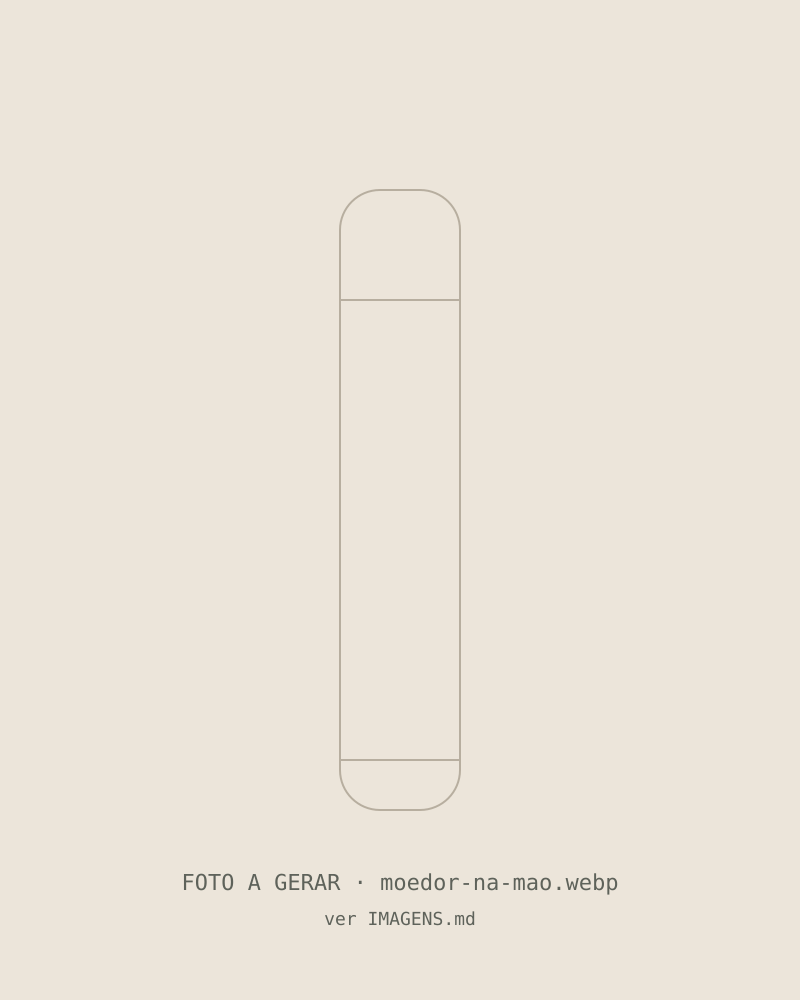

MÓ 01 · moedor de pimenta
Seis peças. Um eixo.
Nogueira maciça torneada, aço inox e uma mó cônica de cerâmica. Role a página e ele se abre na sua frente, ao longo do próprio eixo.
- altura
- 20 cm
- diâmetro
- 5,8 cm
- regulagens
- 8
01 — Por dentro
Ele se abre peça por peça.
-
01 / 05
Porca recartilhada
Aço inox com 24 frisos. Rosqueia no eixo e segura a cabeça: é ela que você aperta para a moagem não folgar.
aço inox 304 · Ø 1,2 cm
-
02 / 05
Cabeça de nogueira
A parte que você gira. A cúpula cabe na palma; a junta com o corpo é uma linha fina, sem degrau para juntar pó.
nogueira maciça · acabamento a óleo
-
03 / 05
Corpo torneado
Uma peça só de nogueira, com a cintura afinada onde a mão segura. O vão interno guarda os grãos inteiros.
nogueira maciça · 14 cm de vão
-
o coração
04 / 05
Mó cônica de cerâmica
Doze sulcos em espiral quebram o grão em vez de esmagar. Cerâmica não enferruja nem pega o cheiro do sal.
cerâmica de alumina · 12 sulcos
-
05 / 05
Anel de regulagem
Oito entalhes no aço, oito espessuras de moagem. Você sente cada clique com o polegar, sem olhar.
aço inox escovado · 8 entalhes
02 — Regulagem
Oito cliques, do pó ao grão quebrado.
Regulagem 1 de 8 · pó fino, para molhos e caldos
- 1
- 2
- 3
- 4
- 5
- 6
- 7
- 8
- 1–2 molhos, caldos, massas
- 3–5 saladas, ovos, legumes
- 6–8 carnes na brasa, crosta de pimenta

A primeira fornada é pequena.
Cada corpo é torneado à mão. Deixe o seu e-mail e avisamos uma vez, quando a fornada abrir. Nada de newsletter.